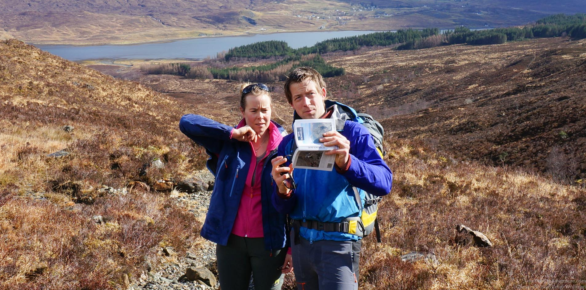
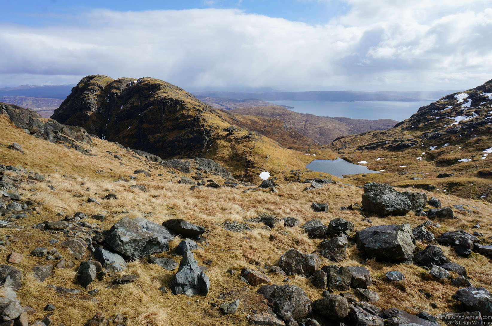
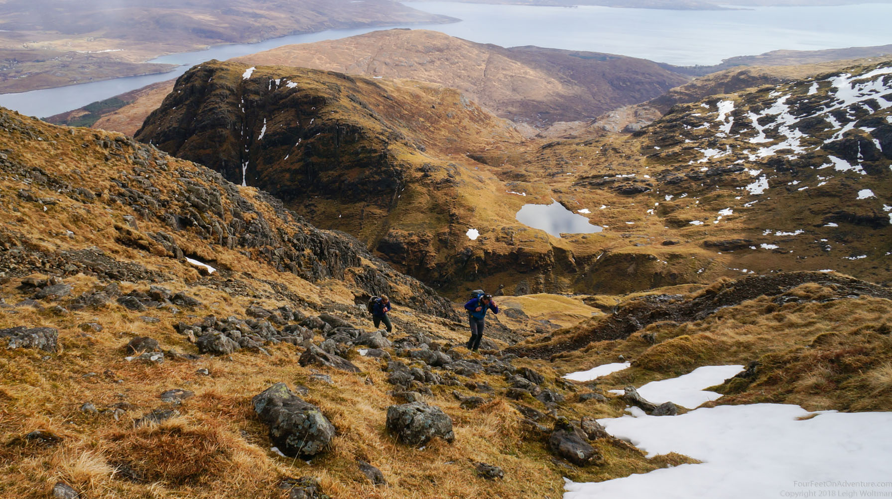
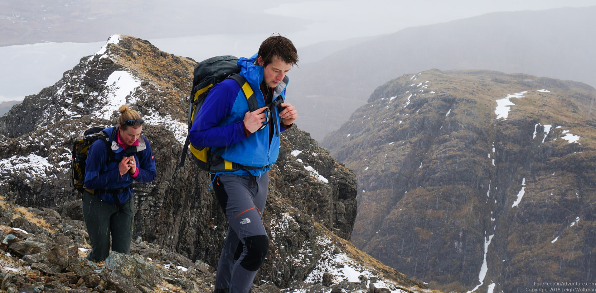
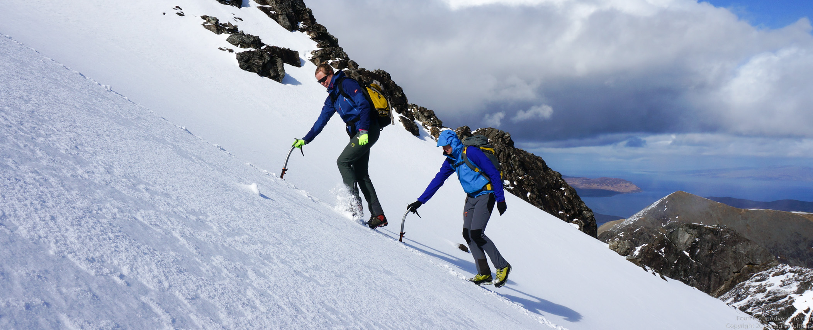
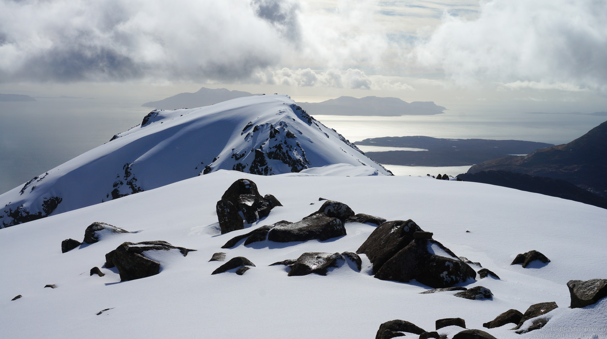
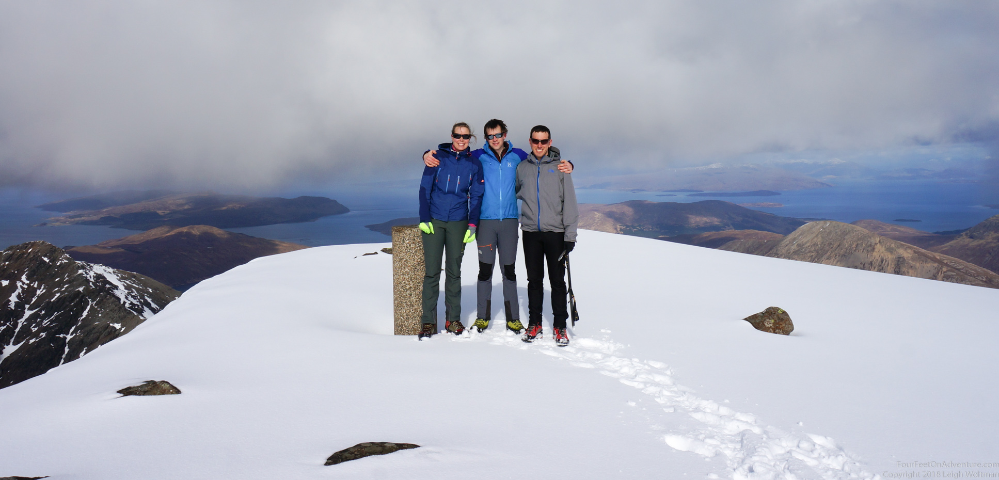
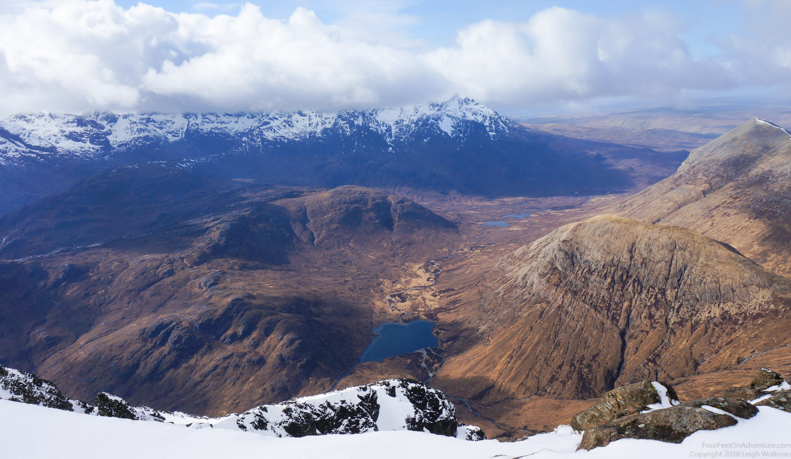
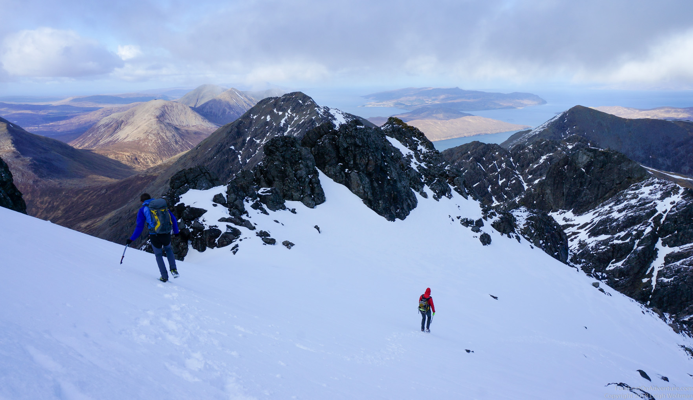

Hilco, Annette’s brother, came by for a winter climbing week. The first stop on the agenda: Skye. After a bit of research, we settled on Bla Bhein, a munro from where there should (and would) be amazing views to the famous Coulins, a mountain range which would have to wait for another trip. The start was at sea level, so we started below the snow line where the goal was simply “follow the path up up up”, though a bit of map reading had to be done.

It didn’t take long before the ups resulted in great views.


Just to get Hilco used to the Scottish conditions, a little rain shower passed by. And some more were about to follow. But the higher we got, the more they looked and felt like snow.

We got to the snow line, and the mountain actually had a real nice top section. As it got steeper, we decided to use crampons and take our axis in hand. The brother-sister team went for some synchronous hiking-uphill moves. It should be an Olympic sport. Leigh ran around like an ibex; put a Canadian on snow and he is in his element!

The top was beautiful, virgin and unreal with the background of sea and islands around us. It really wowed us.

After the classic picture shot, it was time for lunch with amazing views.


We headed down the same way we came. Good to practice a bit with the conditions, and a great start to a week of winter climbing fun!
